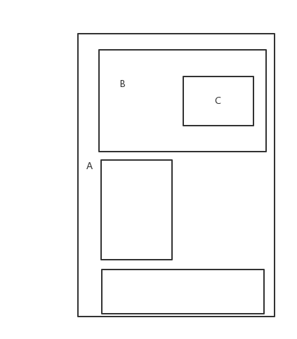
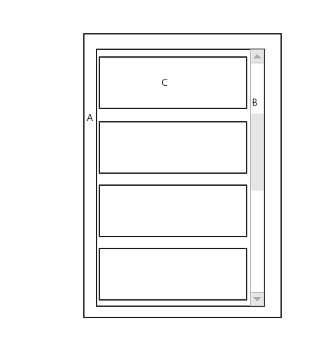

前言
事件分发机制是很多滑动冲突解决的基础，以这篇文章简单小结一下。
罗列一些关键的东西
几个最常用的MotionEvent Action
- ACTION_DOWN
- ACTION_UP
- ACTION_MOVE
- ACTION_CANCLE
在本文接下去的内容中，将以down、up、move、cancle来指代。几个重要方法
- boolean dispatchTouchEvent(MotionEvent ev)
事件分发的起点，返回结果表示当前View是否消费事件 - boolean onInterceptTouchEvent(MotionEvent ev)
表示是否拦截 ，如果拦截了(true)，则交给当前View的onTouchEvent处理。此方法只有ViewGroup拥有，View是没有的。 - boolean onTouchEvent(MotionEvent ev)
返回当前View是否消费事件
下面这段伪代码可以很好的表示这3个方法之间的关系：1
2
3
4
5
6
7public boolean dispatchTouchEvent(MotionEvent ev){
if( onInterceptTouchEvent(ev) ){
return onTouchEent(ev) ;
} else{
return child.dispatchTouchEvent(ev);
}
}
两个例子分析
例子1

有一个Down事件发生在C的区域内，A/B都不需要处理事件。
希望以例子1来说明事件从上到下分发、从下至上反馈的一个过程。
首先，默认情况下，
step1: A.dispatchTouchEvent
A不需要拦截，onInterceptTouchEvent()方法返回false，事件分发给B；
step2: B.dispatchTouchEvent
B也不需要拦截，onInterceptTouchEvent()方法返回false，事件分发给C；
step3:C.dispatchTouchEvent
C没有onInterceptTouchEvent()方法，只能交给onTouchEvent().
情况1： C在onTouchEvent()中消费了事件，则C的dispathchTouchEvent()返回true，一直向上B/A 的dispathchTouchEvent()都返回true，剩下的MOVE时间(如果有的话)、UP时间也都交给C的onTouchEvent()处理。
情况2：C在onTouchEvent()时间没有消费事件(不可被点击，即clickable和longClickable都为false)，则返回False。事件交还给B处理，B再交还给A处理。直到事件被消耗或是顶层View处理。
小结：
事件从上至下分发，如果没有被拦截，会一直交给底层的View处理。如果底层的View没有消费(不可点击)，则会依次向上交给parent处理。
上到下，是onInterceptTouchEvent的调用链；下到上，是onTouchEvent的调用链。其中任何一个步骤返回true，事件就消耗掉了。
例子2

例子2中，A是一个不需要处理时间的ViewGroup，B是一个可滚动的ViewGroup（ListView），C是ListView的一个可点击的Item。一个Down时间发生在C上。
整个过程如下：
Step1：A不拦截，onInterceptTouchEvent()返回false，分发给B。
Step2 : B也不拦截，onInterceptTouchEvent()返回false，分发给C。
Step3： C消费了Down事件，onTouchEvent()返回true。
接下去，Move事件来了。
B是个滚动的View啊，B就拦截了View事件，onInterceptTouchEvent()返回了true，自己处理了Move事件，将内容滑动了一下，并继续接收接下来的Move事件。同时分发了一个cancle事件给C，C收到Cancle事件，也就不接收接下去的Move事件了。
以下是ListView中onInterceptTouchEvent()方法中的一小段源码，说明了这个问题：1
2
3if (startScrollIfNeeded((int) ev.getX(pointerIndex), y, null)) {
return true;
}
C可以通过requestDisallowInterceptTouchEvent()阻止B拦截事件，假如C需要处理MOVE事件的话。
小结：
如果一个ViewGroup拦截了最初的DOWN事件，该事件仍然会传递到该ViewGroup的onTouchEvent()方法中。如果ViewGroup拦截了一个半路的事件（MOVE），这个事件将会被系统变成一个CANCEL事件，并传递给之前处理DOWN事件的View，接下来的事件将交给ViewGroup的onTouchEvent()处理。
一般的滑动冲突解决策略
外部拦截( onInterceptTouchEvent() )
1 | public boolean onInterceptTouchEvent(MotionEvent event) { |
内部拦截( requestDisallowInterceptTouchEvent() )
View中：1
2
3
4
5
6
7
8
9
10
11
12
13public boolean dispatchTouchEvent(MotionEvent event) {
switch (event.getAction()) {
case MotionEvent.ACTION_MOVE: {
if ( 需要parent拦截事件) {
mHorizontalScrollViewEx2.requestDisallowInterceptTouchEvent(false);
}
break;
}
default:
break;
}
return super.dispatchTouchEvent(event);
}
parent中：1
2
3
4
5
6
7public boolean onInterceptTouchEvent(MotionEvent event) {
if (event.getAction() == MotionEvent.ACTION_DOWN) {
return false;
} else {
return true;
}
}